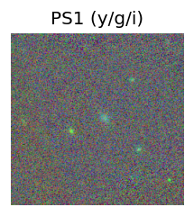
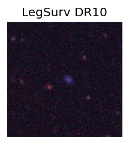

Candidate List 20261124Last night — ZTF: 909 passed basic cuts (9 young) · LSST: 0 passed basic cuts (0 young)Previous Day Next Day
Section 1: New Sources (age<1d) Section 2: Old (1-5d) sources observed last night Section 3: Already classified as a supernova on TNSplaceholder
Section 2: Older Sources Observed Last Night (1)
1. [ZTF] ZTF26acibzya (FBOT?) (TNS: AT 2026akln) [Back to Top] [Share] [Trigger Swift] [Fritz Alert] [Fritz Source] [Lasair]RA, Dec: 356.01581, -6.80351 23h44m3.80s, -6d-48m-12.63sGalactic (l, b): 81.66751, -64.13527 WARNING: -4.66 deg from ecliptic plane ext(g-r) = 0.027


TESS: Sectors [42 70 92]
SDSS (<15 kpc):Found SDSS phot-z: z=0.46; peak abs mag = -23.68
PS1: 0 sources in 3 arcsec
LegacySurvey: 1 sources in 3 arcsec Closest: d = 2.40 arcsec, 260.8 deg (east of north) photoz=0.09 (68% bounds 0.05, 0.11), type=EXP peak abs mag (ext. corrected) = -19.67 (68% bounds -18.54, -20.22)

Extinction-corrected gr color:
From alerts: -0.15 +/- 0.15 mag
Extinction-corrected gi color:
From alerts: -0.49 +/- 0.27 mag
Extinction-corrected ri color:
From alerts: -0.34 +/- 0.27 mag
Rise Rate:
g: 0.29 mag/day
r: 0.11 mag/day
i: 0.04 mag/day
Fade Rate:
Section 3: Already classified as a supernova on TNS (0)